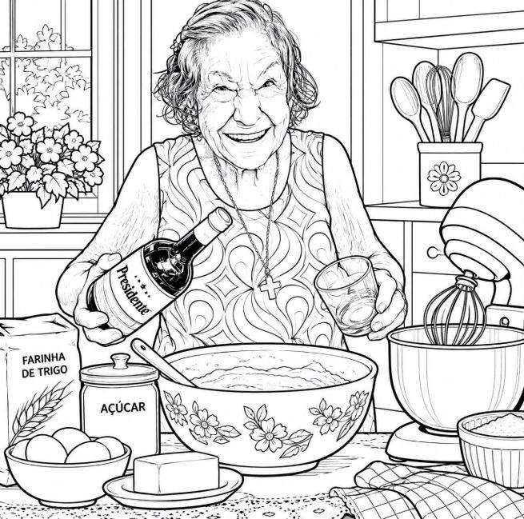
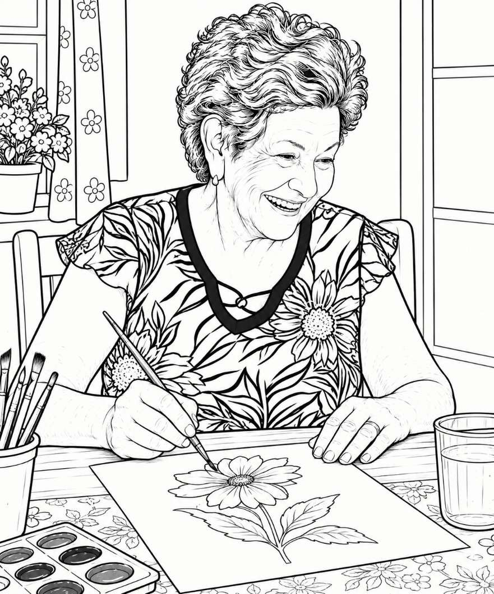

O golinho de conhaque da Dona Zelinda
Há tradições que nascem miúdas, do tamanho de uma colher.
Não pedem licença, não fazem barulho.
Vão passando de mão em mão, de mesa em mesa, até que um dia a gente percebe
que já fazem parte do sangue da família.

Na família da Dona Zelinda, uma dessas tradições tem nome, sobrenome e até rótulo: o conhaque Presidente.
A história vem de longe, do tempo em que Zelinda ainda era menina.
Era dia de exame na escola. A casa acordava mais cedo, o café passado, os cadernos revisados pela última vez, aquele friozinho na barriga que toda criança conhece. E antes de os filhos ganharem a rua, Dona Teresa, a mãe, cumpria o seu costume: chamava um por um e dava a cada qual uma colherzinha de conhaque.
Era para criar coragem. Para espantar o medo.
Para que a criança saísse de casa um palmo maior do que o desafio que a esperava.
Naquele tempo não se falava em ansiedade, não havia técnica de respiração nem palavra difícil para dar nome ao aperto no peito. Havia mãe. E mãe resolvia do jeito que sabia: uma colher de conhaque e a confiança inteira posta nos filhos, como quem diz, sem dizer, vai, que você dá conta.
Assim a história foi atravessando os anos, guardada na memória, contada de boca em boca e temperada com aquelas risadas que só as lembranças antigas sabem acordar. Coisas que só o tempo prova e que, contadas à mesa, ganham ainda mais sabor.
O tempo passou. A menina cresceu.
A família aumentou.
Mas certas manias, pelo visto, não envelhecem.
Até hoje, antes das refeições, Dona Zelinda mantém o seu pequeno ritual: aquele golinho de conhaque. E não pensem que qualquer um serve. Tem que ser Presidente. A marca faz parte da tradição, e tradição de família, todo mundo sabe, não se discute.
Para ela, esse golinho é santo remédio. E quem há de contrariar? Aos 91 anos, Dona Zelinda tem saúde de dar inveja: não toma nenhum
medicamento e apresenta exames de sangue que deixam muito moço para trás. Vitalidade de quem merece aplauso.
Seria esse o segredo da sua longevidade? Seria o conhaque Presidente? Ela tem lá a sua teoria. E nós temos uma boa história para contar.
Cada corpo, é claro, tem a sua própria natureza, e o conhaque não é remédio nem fórmula comprovada para viver mais. Mas, na vida de Dona Zelinda, ele ocupa um lugar que nenhum laboratório explica: é tradição, é lembrança de mãe, é um gesto miúdo que atravessou gerações sem perder o sentido.
Fica, então, a dica da Dona Zelinda. E que os seus 91 anos sigam sendo celebrados com saúde, alegria, boas histórias e aquela risada gostosa que faz todo mundo ao redor sorrir também.
Quando chega a hora de preparar uma receita especial, o conhaque também ganha o seu lugar de honra na cozinha. Se já mora nas lembranças da família, por que haveria de ficar de fora do fogão?
No nosso famoso sorvetão, o Presidente entra na receita. É aquele toque que acompanha a história e transforma um doce simples em mais uma recordação servida à mesa.
Porque na cozinha da Dona Zelinda receita nunca é só receita. É lembrança.
É costume.
É saber que passa de mãe para filha, de uma geração para a outra.
E assim, entre uma colher de açúcar, uma mistura bem batida e as histórias que vão sendo contadas enquanto o doce fica pronto, Dona Zelinda nos ensina que o segredo de uma receita não mora apenas nos ingredientes.
Mora no amor de quem prepara. Na memória de quem conta.
Na alegria de quem se senta à mesa para saborear.
Então que venha o sorvetão, com seu sabor inconfundível, seu toque de conhaque Presidente e uma boa história para acompanhar cada colherada.
Aos 91 anos, Dona Zelinda segue provando, sem pressa e sem alarde, que uma vida bem vivida se faz de afeto, de boas lembranças e de histórias que merecem ser contadas muitas e muitas vezes.

MOMENTO I II
OS NETOS:
NOVOS AMORES, NOVAS MEMÓRIAS